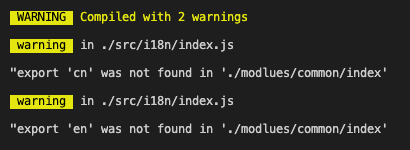

import { } 解构与 export 和 export default.md
这篇文章发布于 2021/04/03，归类于 JavaScript
标签：
import {} 与 export default，import {}
在封装功能函数时，我们经常需要在 import 时使用解构 {} 来仅导出部分模块功能。在有些情况会发现是无法解构的，下面来看看
// ./modlues/common/index
export default {
en: {
msg: 'hello',
},
cn: {
msg: '你好',
},
}
// index.js
import { en, cn } from './modlues/common/index'
console.log(en, cn)
这里是无法解构的，提示警告，需要写成这样
import common from './modlues/common/index'
let { en, cn } = common
console.log(en, cn)如果是需要在 import 时就能解构，需要使用下面的写法
// ./modlues/common/index
export const en = {
msg: 'hello',
}
export const cn = {
msg: '你好',
}或者
const en = {
msg: 'hello',
}
const cn = {
msg: '你好',
}
export { en, cn }- 一般 export default 的内容，需要使用
import xxx from 'xx'直接接收，不能在 import 时解构 - 通过 export xx 的内容，需要使用
import { xx, xx } from 'xx'或import * as xx from 'xx'接收